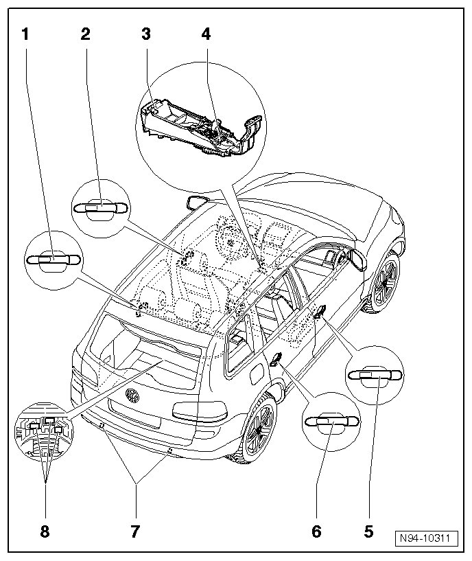

Access/Start Authorization Antennas and Sensors Assembly Overview
Access/Start Authorization Antennas and Sensors Assembly Overview

1 Rear left outer door handle
The following components are integrated in left rear outside door handle:
• Left access/start authorization antenna (R134)
• Left Rear Outside Door Handle Touch Sensor (G417)
• Left Rear Outside Door Handle Central Locking Button (E371)
• Left Access/Start Authorization Antenna (R134) has two parts. The first part is located in the front outside door handle on driver's side. The second part is also located on driver's side, but in the rear outside door handle. The antennae must also be replaced separately (front and rear).
• The complete outer door handle must always be replaced if malfunctioning.
• No coding, basic setting or adaptation is necessary when outside door handle is replaced.
• Removing and installing left rear outside door handle --> [ Left Rear Outside Door Handle ] Access/Start Authorization Antennas and Sensors
• Checking Left Access/Start Authorization Antenna (R134) --> [ Access/Start Authorization Control Module Output Diagnostic Test Mode ] Access/Start Authorization
2 Driver's side outside door handle
The following components are integrated in driver's side outside door handle:
• Left access/start authorization antenna (R134)
• Driver's Outside Door Handle Touch Sensor (G415)
• Driver's Outside Door Handle Central Locking Button (E369)
• Left Access/Start Authorization Antenna (R134) has two parts. The first part is located in the front outside door handle on driver's side. The second part is also located on driver's side, but in the rear outside door handle. The antennae must also be replaced separately (front and rear).
•
• The complete outer door handle must always be replaced if malfunctioning.
• No coding, basic setting or adaptation is necessary when outside door handle is replaced.
• Removing and installing driver-side outside door handle --> [ Driver Outside Door Handle ] Access/Start Authorization Antennas and Sensors
• Checking Left Access/Start Authorization Antenna (R134) --> [ Access/Start Authorization Control Module Output Diagnostic Test Mode ] Access/Start Authorization
3 Interior Access/Start Authorization Antenna 2 (R139)
• Component location: in center console, front
• Removing and installing --> [ Interior Access/Start Authorization Antenna 2 ] Access/Start Authorization Antennas and Sensors
• Checking --> [ Access/Start Authorization Control Module Output Diagnostic Test Mode ] Access/Start Authorization
4 Interior Access/Start Authorization Antenna 1 (R138)
• Component location: In front of shift lever
• Removing and installing --> [ Interior Access/Start Authorization Antenna 1 ] Access/Start Authorization Antennas and Sensors
• Checking --> [ Access/Start Authorization Control Module Output Diagnostic Test Mode ] Access/Start Authorization
5 Passenger's side outside door handle
The following components are integrated in passenger's side outside door handle:
• Right access/start authorization antenna (R135)
• Front Passenger's Outside Door Handle Touch Sensor (G416)
• Front Passenger's Outside Door Handle Central Locking Button (E370)
• Right Access/Start Authorization Antenna (R135) has two parts. The first part is located in the front outside door handle on passenger's side. The second part is also located on passenger's side, but in the rear outside door handle. The antennae must also be replaced separately (front and rear).
• The complete outer door handle must always be replaced if malfunctioning.
• No coding, basic setting or adaptation is necessary when outside door handle is replaced.
• Removing and installing passenger-side outside door handle --> [ Passenger Outside Door Handle ] Access/Start Authorization Antennas and Sensors
• Checking Right Access/Start Authorization Antenna (R135) --> [ Access/Start Authorization Control Module Output Diagnostic Test Mode ] Access/Start Authorization
6 Right rear outside door handle
The following components are integrated in right rear outside door handle:
• Right access/start authorization antenna (R135)
• Right Rear Outside Door handle Touch Sensor (G418)
• Right Rear Outside Door Handle Central Locking Button (E372)
• Right Access/Start Authorization Antenna (R135) has two parts. The first part is located in the front outside door handle on passenger's side. The second part is also located on passenger's side, but in the rear outside door handle. The antennae must also be replaced separately (front and rear).
• The complete outer door handle must always be replaced if malfunctioning.
• No coding, basic setting or adaptation is necessary when outside door handle is replaced.
• Removing and installing right rear outside door handle --> [ Right Rear Outside Door Handle ] Access/Start Authorization Antennas and Sensors
• Checking Right Access/Start Authorization Antenna (R135) --> [ Access/Start Authorization Control Module Output Diagnostic Test Mode ] Access/Start Authorization
7 Access/start authorization antenna (in rear bumper) (R136)
• Access/Start Authorization Antenna (in rear bumper) (R136) has two parts. The first part is located in left side of rear bumper. The second part is located in right side of rear bumper.
• Removing and installing --> [ Rear Bumper Access/Start Authorization Antenna ] Access/Start Authorization Antennas and Sensors
• Checking --> [ Access/Start Authorization Control Module Output Diagnostic Test Mode ] Access/Start Authorization
8 Luggage compartment access/start authorization antenna (R137)
• Depending on equipment, Luggage Compartment Access/Start Authorization Antenna (R137) is located at three different positions in luggage compartment.
• Removing and installing --> [ Luggage Compartment Access/Start Authorization Antenna ] Access/Start Authorization Antennas and Sensors
• Checking --> [ Access/Start Authorization Control Module Output Diagnostic Test Mode ] Access/Start Authorization